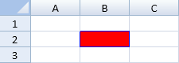
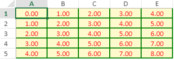
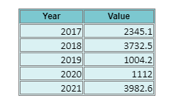
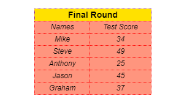

You can create a style in SpreadJS that can be applied to a cell, cell range, rows, columns, or a sheet using the Style object. You can also create your own named style that uses a Style object. The style can contain settings such as borders, colors, and fonts.
The cell style is a composite of settings that are applied based on priority. The style in the cell has the highest priority. The style of the row the cell is in is next, then the column the cell is in, and then the default style of the sheet.
Style objects can be assigned using the setStyle and setStyleName methods for cells and cell ranges. You can also specify an entire row or entire column by using the -1 value.
You can create a style and apply it to a cell in a spreadsheet using the setStyle method.
The following image displays a style in cell B2:

This example uses the setStyle method to assign a style to a cell.
| JavaScript |
Copy Code
|
|---|---|
var style = new GC.Spread.Sheets.Style(); style.backColor = "red"; style.borderLeft = new GC.Spread.Sheets.LineBorder("blue",GC.Spread.Sheets.LineStyle.medium); style.borderTop = new GC.Spread.Sheets.LineBorder("blue",GC.Spread.Sheets.LineStyle.medium); style.borderRight = new GC.Spread.Sheets.LineBorder("blue",GC.Spread.Sheets.LineStyle.medium); style.borderBottom = new GC.Spread.Sheets.LineBorder("blue",GC.Spread.Sheets.LineStyle.medium); activeSheet.setStyle(1,1,style,GC.Spread.Sheets.SheetArea.viewport); //row //activeSheet.setStyle(1,-1,style,GC.Spread.Sheets.SheetArea.viewport); //column //activeSheet.setStyle(-1,2,style,GC.Spread.Sheets.SheetArea.viewport); |
|
You can specify a default style for the cells in a spreadsheet by using the SetDefaultStyle method.
The following image displays the default style for the cells.

This example uses the setDefaultStyle method.
| JavaScript |
Copy Code
|
|---|---|
//setDefaultStyle activeSheet.setRowCount(5, GC.Spread.Sheets.SheetArea.viewport); activeSheet.setColumnCount(5, GC.Spread.Sheets.SheetArea.viewport); //Set the default styles. var defaultStyle = new GC.Spread.Sheets.Style(); defaultStyle.backColor = "LemonChiffon"; defaultStyle.foreColor = "Red"; defaultStyle.formatter = "0.00"; defaultStyle.hAlign = GC.Spread.Sheets.HorizontalAlign.center; defaultStyle.borderLeft = new GC.Spread.Sheets.LineBorder("Green",GC.Spread.Sheets.LineStyle.medium); defaultStyle.borderTop = new GC.Spread.Sheets.LineBorder("Green",GC.Spread.Sheets.LineStyle.medium); defaultStyle.borderRight = new GC.Spread.Sheets.LineBorder("Green",GC.Spread.Sheets.LineStyle.medium); defaultStyle.borderBottom = new GC.Spread.Sheets.LineBorder("Green",GC.Spread.Sheets.LineStyle.medium); activeSheet.setDefaultStyle(defaultStyle, GC.Spread.Sheets.SheetArea.viewport); var rowCount = activeSheet.getRowCount(); var colCount = activeSheet.getColumnCount(); for(var i = 0; i < rowCount; i++){ for(var j = 0; j < colCount; j++){ activeSheet.setValue(i, j, i+j, GC.Spread.Sheets.SheetArea.viewport); } } |
|
You can specify a style and apply it to a cell range using the CellRange's setStyle method. For example, the following image shows two different styles set on the cell range.

The following code sample shows how to set styles in a cell range.
| JavaScript |
Copy Code
|
|---|---|
// use setStyle method on cellRange let style1 = new GC.Spread.Sheets.Style(); style1.formatter = "#,##0.00"; style1.backColor = "rgb(124,200,208)"; style1.hAlign = GC.Spread.Sheets.HorizontalAlign.center; style1.font = "bold 12px sans-serif"; style1.borderLeft = new GC.Spread.Sheets.LineBorder("gray", GC.Spread.Sheets.LineStyle.double); style1.borderTop = new GC.Spread.Sheets.LineBorder("gray", GC.Spread.Sheets.LineStyle.double); style1.borderRight = new GC.Spread.Sheets.LineBorder("gray", GC.Spread.Sheets.LineStyle.double); style1.borderBottom = new GC.Spread.Sheets.LineBorder("gray", GC.Spread.Sheets.LineStyle.double); activeSheet.getRange("I2:J2").setStyle(style1); let style2 = new GC.Spread.Sheets.Style(); style2.backColor = "rgb(218, 241, 243)"; style2.borderLeft = new GC.Spread.Sheets.LineBorder("gray", GC.Spread.Sheets.LineStyle.double); style2.borderTop = new GC.Spread.Sheets.LineBorder("gray", GC.Spread.Sheets.LineStyle.double); style2.borderRight = new GC.Spread.Sheets.LineBorder("gray", GC.Spread.Sheets.LineStyle.double); style2.borderBottom = new GC.Spread.Sheets.LineBorder("gray", GC.Spread.Sheets.LineStyle.double); activeSheet.getRange("I3:J7").setStyle(style2); |
|
You can create your own named style and add it to the sheet or the spread with the addNamedStyle method. You can change the style settings or remove the named style. Use the setStyleName method from Worksheet or CellRange class to use the style on a cell or a cell range. Use -1 to specify an entire row or entire column.

Named styles are useful if a style is used many times or in many cells. Use a named style with a JSON data source or Excel import and export since less data is used.
The following code sample uses named styles to set styles for the table header and the table data.
| JavaScript |
Copy Code
|
|---|---|
// use setStyleName method on cell let styleCell = new GC.Spread.Sheets.Style(); styleCell.name = "header_style"; styleCell.font = "bold 14px sans-serif"; styleCell.hAlign = GC.Spread.Sheets.HorizontalAlign.center; styleCell.backColor = "rgb(255, 225, 0)"; styleCell.borderLeft = new GC.Spread.Sheets.LineBorder("purple", GC.Spread.Sheets.LineStyle.hair); styleCell.borderTop = new GC.Spread.Sheets.LineBorder("purple", GC.Spread.Sheets.LineStyle.hair); styleCell.borderRight = new GC.Spread.Sheets.LineBorder("purple", GC.Spread.Sheets.LineStyle.hair); styleCell.borderBottom = new GC.Spread.Sheets.LineBorder("purple", GC.Spread.Sheets.LineStyle.hair); activeSheet.addNamedStyle(styleCell); activeSheet.setStyleName(1, 1, "header_style"); activeSheet.setStyleName(1, 2, "header_style"); // use setStyleName method on cell range let style = new GC.Spread.Sheets.Style(); style.name = "score_style"; style.font = "italic 12px sans-serif"; style.hAlign = GC.Spread.Sheets.HorizontalAlign.center; style.backColor = "rgb(255,149,126)"; style.borderLeft = new GC.Spread.Sheets.LineBorder("red", GC.Spread.Sheets.LineStyle.hair); style.borderTop = new GC.Spread.Sheets.LineBorder("red", GC.Spread.Sheets.LineStyle.hair); style.borderRight = new GC.Spread.Sheets.LineBorder("red", GC.Spread.Sheets.LineStyle.hair); style.borderBottom = new GC.Spread.Sheets.LineBorder("red", GC.Spread.Sheets.LineStyle.hair); activeSheet.addNamedStyle(style); activeSheet.getRange("B3:C8").setStyleName("score_style"); |
|
You can also set apply flags that help to handle the effect of different properties in the defined named styles. This gives the option to set more than one named style to a cell without affecting each other's formatting options.
The following table shows all the available apply flags available in GC.Spread.Sheets.Style and the properties affected for namedStyle:
| Apply Flag | Properties Affected |
|---|---|
| applyNumberFormat | formatter |
| applyFont |
foreColor font themeFont textDecoration |
| applyFill | backColor |
| applyBorder |
borderLeft boderRight borderTop borderBottom diagonalDown diagonalUp |
| applyAlignment |
vAlign hAlign textIndent wordWrap isVerticalText |
| applyProtection | locked |
The default value of apply flags behave equally as being true. These properties will be saved in exported JSON if the value is defined for namedStyle.
For example, you can add two different named styles to a cell where "Font style" controls the font properties whereas "Align style" controls the alignment properties. The following code sample shows how to achieve the same.
| JavaScript |
Copy Code
|
|---|---|
var style = new GC.Spread.Sheets.Style(); style.name = "Font style"; style.font = "Verdana"; style.backColor = "red"; style.formatter = "yyyy/mm/dd"; style.hAlign = GC.Spread.Sheets.HorizontalAlign.center; style.applyFill = false; style.applyAlignment = false; spread.addNamedStyle(style); var style2 = new GC.Spread.Sheets.Style(); style2.name = "Align style"; style2.font = "Calibri"; style2.backColor = "yellow"; style2.formatter = "dd/mm/yy"; style2.hAlign = GC.Spread.Sheets.HorizontalAlign.right; style2.wordWrap = false; style2.applyFont = false; style2.applyNumberFormat = false; spread.addNamedStyle(style2); //do something activeSheet.setStyleName(0, 1, "Font style"); activeSheet.setStyleName(0, 1, "Align style"); //another usage activeSheet.setStyle(0, 0, "Font style"); activeSheet.setStyle(0, 0, "Align style"); |
|